My undergraduate training in pharmacy and chemistry competitions built
a systematic chemical foundation. During my master's training, I worked
on cyclic peptide total synthesis, computational structural design,
and anti-inflammatory activity evaluation, forming a foundation that
connects molecular design, chemical synthesis, and biological function.
In 2021, I joined the School of Chemistry and Chemical Engineering
at Nanjing University for doctoral training. My work gradually moved
toward mechanisms by which protein-protein interactions participate
in biological processes, and how these mechanisms can be engineered.
Since joining the Central Laboratory of The First Affiliated Hospital
of Ningbo University in July 2025, I have been working as a Distinguished
Associate Research Fellow and independent PI. My current work uses
metal-centered mechanisms and engineering platforms to address tendon injury,
pathological biomineralization, oral diseases, cancer targeting, and PET/CT molecular imaging.
研究方向
Research
金属如何连接疾病机制、生物医学工程与临床诊疗？
How do metals connect disease mechanisms, biomedical engineering, and clinical theranostics?
I use metal ions, metal coordination, and radiometals as entry points
to connect disease mechanisms, biomedical engineering, and molecular imaging.
Mechanisms, engineering platforms, and theranostic tools are organized around metals.
Clinical questions are translated into problems involving metal ions,
metal coordination, metal interfaces, or radiometals. Current clinical
inputs come mainly from orthopedics, stomatology, and nuclear medicine.
01
金属作为机制变量
Metals as mechanistic variables
围绕病理性结晶、金属离子稳态和组织微环境，研究金属相关过程如何影响炎症、矿化和组织修复。
This direction asks how pathological crystals, metal-ion homeostasis,
and tissue microenvironments shape inflammation, mineralization, and tissue repair.
痛风晶体、牙结石等病理性矿化过程
金属组学与金属离子细胞生物学
合作科室：骨科中心、中心试验室
Pathological mineralization, including gout crystals and dental calculus
Metallomics and metal-ion cell biology
Clinical inputs: orthopedics and stomatology
02
金属作为工程节点
Metals as engineering nodes
围绕跟腱损伤和组织修复，发展以金属配位、金属多酚网络和MOF/纳米酶为核心的局部递送平台。
This direction develops injectable and local delivery platforms
based on metal coordination, metal-phenolic networks, MOFs, and nanozymes for tendon injury and tissue repair.
压电水凝胶、3D打印支架、静电纺丝体系
微针、微球等递送缓释系统
合作科室：骨科中心
Piezoelectric hydrogels, 3D-printed scaffolds, and electrospun fibers
Microneedle- and microsphere-based sustained delivery systems
Clinical input: orthopedics
03
金属作为诊疗工具
Metals as theranostic tools
围绕肿瘤靶向和PET/CT分子影像，发展放射金属配位平台、多肽和binder设计工具。
This direction develops radiometal, metal-coordination, and binder-design
tools for cancer targeting and PET/CT molecular imaging.
PPI界面肽段、从头设计binder与噬菌体展示
基于MOF的PET/CT成像示踪剂
合作科室：核医学科、口腔科
PPI-interface peptides, de novo binder design, and phage display
MOF-based PET/CT imaging probes
Clinical inputs: nuclear medicine and stomatology
团队成员
Team
建设中的临床问题导向研究团队
A growing clinically oriented research team
课题组正在宁波大学附属第一医院方桥院区建设。
The group is being established at the Fangqiao Campus of The First
Affiliated Hospital of Ningbo University.
课题组负责人Principal Investigator
张壮伟
Zhuangwei Zhang
特聘副研究员，独立课题组长。负责金属生命科学、生物医学工程平台和临床转化研究方向设计。
Distinguished Associate Research Fellow and independent PI. Leads research in metallobiology, biomedical engineering platforms, and clinical translation.
核心临床合作Core clinical collaborators
毛海蛟、肖尊宇、赵梦祥
Haijiao Mao, Zunyu Xiao, Mengxiang Zhao
覆盖骨科中心、核医学科和口腔科，支撑跟腱病损、PET/CT分子影像和口腔疾病研究。
Core clinical collaborators from orthopedics, nuclear medicine, and stomatology support tendon disease, PET/CT imaging, and oral disease studies.
外部交叉合作Interdisciplinary collaborator
姜烁琦
Shuoqi Jiang
江南大学生物工程学院博士，浙江万里学院助理研究员，参与生物信息和病理性结晶沉积微生物等交叉方向。
Ph.D. from the School of Biotechnology, Jiangnan University, and Assistant Research Fellow at Zhejiang Wanli University, contributing to bioinformatics and pathological crystal-associated microbiology.
外部交叉合作Interdisciplinary collaborator
李建新
Jianxin Li
南京大学化学化工学院有机化学教授，参与有机化学、分子设计与交叉转化研究合作。
Professor of Organic Chemistry at the School of Chemistry and Chemical Engineering, Nanjing University, collaborating on organic chemistry, molecular design, and translational interdisciplinary research.
外部交叉合作Interdisciplinary collaborator
李仁杰
Renjie Li
广东双林生物制药有限公司研发中心项目研究员，参与生物制药研发与转化合作。
Project Researcher at the R&D Center of Guangdong Shuanglin Bio-Pharmacy Co., Ltd., collaborating on biopharmaceutical R&D and translational projects.
生物医学工程-水凝胶方向Biomedical engineering: hydrogels
跟腱病损与递送缓释体系
Tendon disease and sustained delivery systems
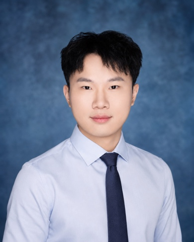
钟梦林Menglin Zhong宁波大学2025级骨科学专硕2025 M.Med. candidate in Orthopedics, Ningbo University生物压电、3D打印与跟腱病Bioelectricity, 3D printing, and tendon disease
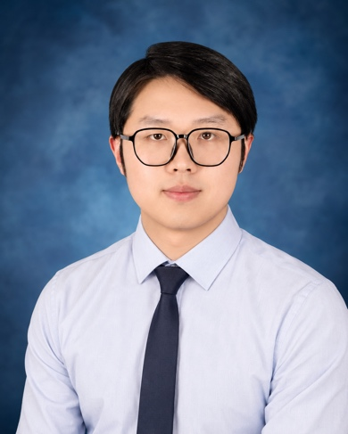
王轲瑜Keyu Wang温州医科大学2025级骨科学专硕2025 M.Med. candidate in Orthopedics, Wenzhou Medical University核壳微球、气体疗法与跟腱病Core-shell microspheres, gas therapy, and tendon disease
李家骏Jiajun Li温州医科大学2025级骨科学专硕2025 M.Med. candidate in Orthopedics, Wenzhou Medical University核壳微针、金属-药物网络与跟腱病Core-shell microneedles, metal-drug networks, and tendon disease
邵一丁Yiding Shao宁波大学2024级临床医学学硕2024 M.Med. candidate in Clinical Medicine, Ningbo University水凝胶与跟腱缺损Hydrogels and tendon defects
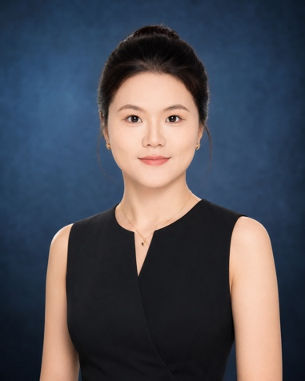
杨雯Wen Yang宁波大学2025级临床医学学硕2025 M.Med. candidate in Clinical Medicine, Ningbo University脱细胞基质水凝胶与跟腱缺损Decellularized matrix hydrogels and tendon defects
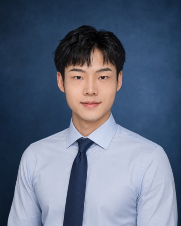
任天一Tianyi Ren宁波大学2025级机械专硕2025 M.Eng. candidate in Mechanical Engineering, Ningbo University静电纺丝支架与跟腱缺损Electrospun scaffolds and tendon defects
生物医学工程-纳米酶方向Biomedical engineering: nanozymes
纳米酶与Bio-MOF
Nanozymes and Bio-MOFs
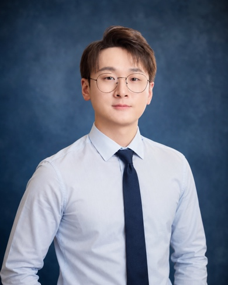
张壮伟Zhuangwei ZhangMOF纳米酶与痛风性关节炎MOF nanozymes and gouty arthritis
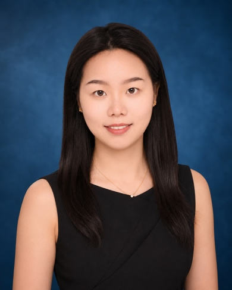
程俊格Junge Cheng丽水学院2025级口腔科专硕2025 professional master's candidate in Stomatology, Lishui University高熵纳米酶、MPNs与舌鳞状细胞癌High-entropy nanozymes, MPNs, and oral squamous cell carcinoma
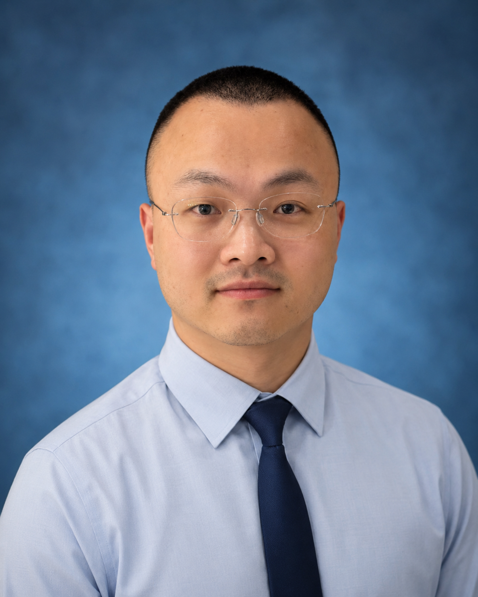
姚思恩Sien Yao宁波大学附属第一医院静配中心青年药师Clinical pharmacist, PIVAS, The First Affiliated Hospital of Ningbo University生物MOFBio-MOFs
病理机制解析Pathological mechanism analysis
多组学分析与疗法创新
Multi-omics analysis and therapeutic innovation
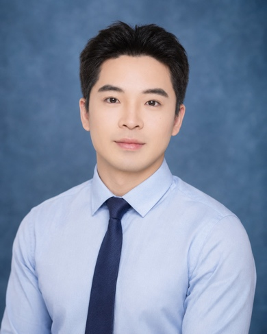
樊基耿Jigeng Fan宁波大学2025级临床医学学博2025 M.D.-Ph.D. candidate in Clinical Medicine, Ningbo University昼夜节律与跟腱病Circadian rhythm and tendon disease
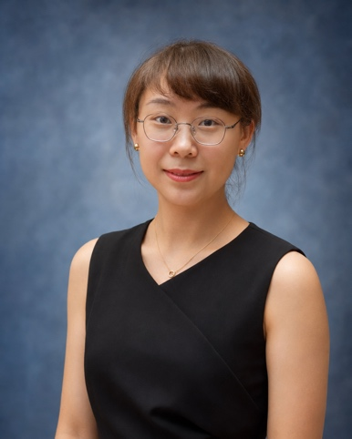
姜烁琦Shuoqi Jiang江南大学生物工程学院博士；浙江万里学院助理研究员Ph.D., School of Biotechnology, Jiangnan University; Assistant Research Fellow, Zhejiang Wanli University酶替代疗法与病理性结晶沉积微生物Enzyme replacement therapy and pathological crystal-associated microbiology
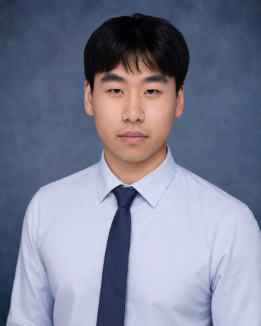
李家骏Jiajun Li温州医科大学2025级骨科学专硕2025 M.Med. candidate in Orthopedics, Wenzhou Medical University金属代谢组学与跟腱病Metallometabolomics and tendon disease
分子设计Molecular design
多肽-蛋白质从头设计
De novo peptide-protein design
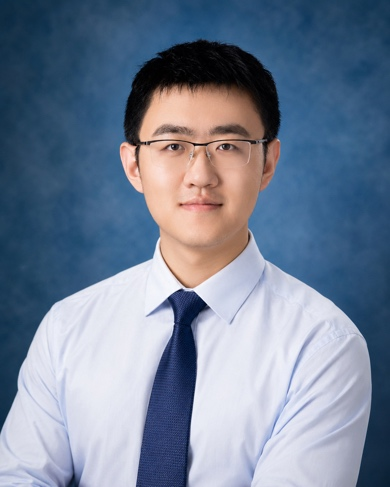
段劭Shao Duan哈尔滨医科大学骨科学博士研究生Ph.D. candidate in Orthopedics, Harbin Medical University免疫细胞PET分子成像与多肽PET示踪剂设计Immune-cell PET imaging and peptide PET tracer design
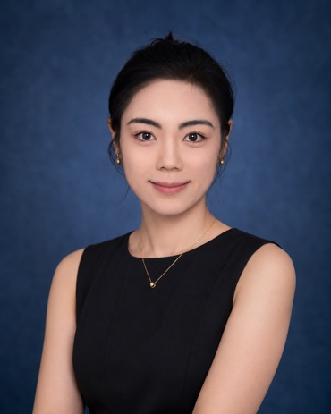
章若梦Ruomeng Zhang宁波大学2025级临床医学学硕2025 M.Med. candidate in Clinical Medicine, Ningbo University多肽及蛋白质从头设计De novo peptide and protein design
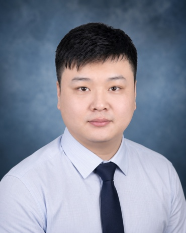
赵耀Yao Zhao哈尔滨医科大学2024级骨科学专硕2024 M.Med. candidate in Orthopedics, Harbin Medical University分子设计与PET示踪剂相关研究Molecular design and PET tracer research
实习成员Intern members
实习成员
Intern members
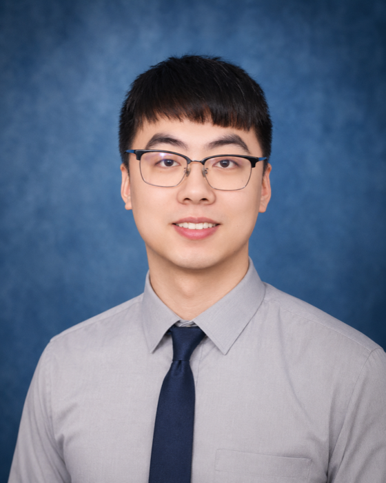
杨沅Yuan Yang宁波大学2026级骨科学专硕2026 M.Med. candidate in Orthopedics, Ningbo University天然产物凝胶Natural product gels带教：樊基耿Mentor: Jigeng Fan
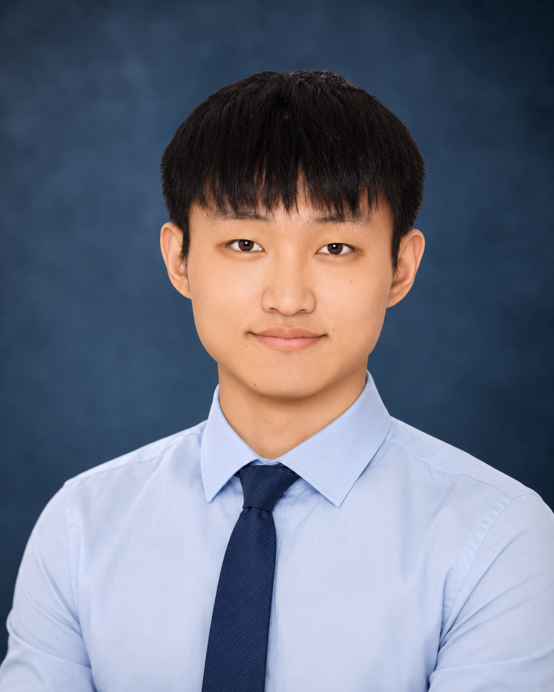
霍亭洋Tingyang Huo温州医科大学2026级骨科学专硕2026 M.Med. candidate in Orthopedics, Wenzhou Medical University暂无To be determined带教：李家骏Mentor: Jiajun Li
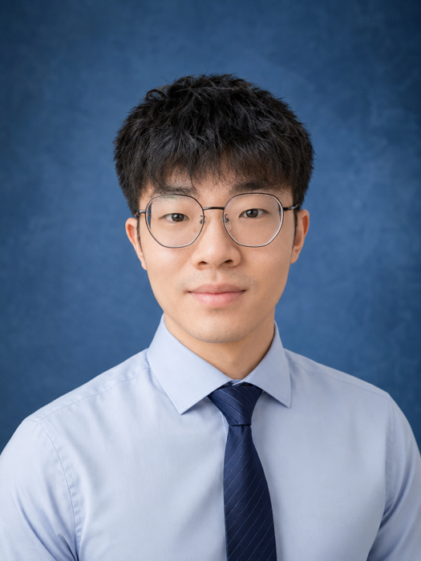
艾林Lin Ai温州医科大学2026级骨科学学硕2026 M.Sc. candidate in Orthopedics, Wenzhou Medical University暂无To be determined带教：钟梦林Mentor: Menglin Zhong
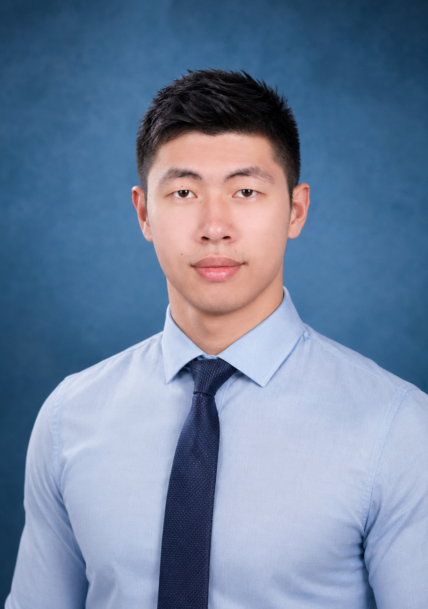
陶昕昊Xinhao Tao宁波大学2025级临床医学（拔尖人才创新班）2025 Clinical Medicine (Top-notch Innovative Talent Program), Ningbo University暂无To be determined带教：王轲瑜Mentor: Keyu Wang
共同第一作者 Qin S., Wang Q., Zhang Z., Gu J., He G., Zeng F., Chen R., He B., Wang Y., Wang M., Song Y. Metabolic Hijacking by Engineered Probiotics Reprograms Tumor Metabolism and Immune Microenvironment for Self-Reinforcing Photodynamic Immunotherapy. Journal of the American Chemical Society, 2025. DOI: 10.1021/jacs.5c10242.
通讯作者高被引 Wang H., Xiang L., Zhang Z., Li G., Li P., Chen W., Yu F., Lin X., Lin S. Elucidating the interaction mechanism of rutin with beta-casein and beta-lactoglobulin: A comprehensive analysis using multi-spectroscopy, molecular docking, and molecular dynamic simulations. Food Chemistry, 2025. DOI: 10.1016/j.foodchem.2025.143411.
共同第一作者 Jiang S., Zhang Z., Gu Q., Li J., Yu X. Rational design to enhance the catalytic activity of acetylcholinesterase and mitigate trichlorfon toxicity in vitro. International Journal of Biological Macromolecules, 2024. DOI: 10.1016/j.ijbiomac.2024.138001.
第一作者Zhang Z., You Y., Jiang S., Tang Y., Jia Z., Li J. In silico screening of dyes for enhanced silk coloring using the feeding approach. Sustainable Chemistry and Pharmacy, 2024. DOI: 10.1016/j.scp.2024.101804.
共同第一作者 Li H., Zhang Z., Chen J., Sun M., Tang H. Effect of Cu2+ on the binding of catechins to zein through multi-spectral and in silico analyses. Food Chemistry, 2024. DOI: 10.1016/j.foodchem.2024.141547.
第一作者Zhang Z., Jiang S., Li Y., Xie D., Li J. Residue profiles of peptides with cholesterol esterase and pancreatic lipase inhibitory activities through virtual screening and sequence analysis. Food Chemistry, 2024. DOI: 10.1016/j.foodchem.2024.140708.
共同第一作者 Jiang S., Zhang Z., Gu Q., Yu X. Semi-rational design for enhancing thermostability of Culex pipiens acetylcholinesterase and sensitivity analysis of acephate. Science of The Total Environment, 2024. DOI: 10.1016/j.scitotenv.2024.173282.
共同第一作者 Chen J., Zhang Z., Li H., Sun M., Tang H. Preparation, structural characterization, and functional attributes of zein-lysozyme-kappa-carrageenan ternary nanocomposites for curcumin encapsulation. International Journal of Biological Macromolecules, 2024. DOI: 10.1016/j.ijbiomac.2024.132264.
共同第一作者 Chen J., Zhang Z., Li R., Li H., Tang H. Investigating the interaction mechanism between gliadin and lysozyme through multispectroscopic analysis and molecular dynamic simulations. Food Research International, 2024. DOI: 10.1016/j.foodres.2024.114081.
第一作者Zhang Z., Li R., Tang H., Li J. Interactions and characterization of Zein-BSA nanoparticles: Multi-spectral analysis and molecular simulations. Journal of Molecular Liquids, 2023. DOI: 10.1016/j.molliq.2023.123293.
共同第一作者 Chen J., Zhang Z., Li H., Tang H. Exploring the effect of a series of flavonoids on tyrosinase using integrated enzyme kinetics, multispectroscopic, and molecular modelling analyses. International Journal of Biological Macromolecules, 2023. DOI: 10.1016/j.ijbiomac.2023.126451.
共同第一作者 Li R., Zhang Z., Chen J., Li H., Tang H. Investigating of zein-gum arabic-tea polyphenols ternary complex nanoparticles for luteolin encapsulation: Fabrication, characterization, and functional performance. International Journal of Biological Macromolecules, 2023. DOI: 10.1016/j.ijbiomac.2023.125059.
共同第一作者 Li R., Huang L., Zhang Z., Chen J., Tang H. Integrated multispectroscopic analysis and molecular docking analyses of the structure-affinity relationship and mechanism of the interaction of flavonoids with zein. Food Chemistry, 2022. DOI: 10.1016/j.foodchem.2022.132839.
第一作者Zhang Z., Jiang S., Tian H., Zeng Y., He K., Lin L., Yu F. Ethyl acetate fraction from Nymphaea hybrida Peck modulates inflammatory responses in LPS-stimulated RAW 264.7 cells and acute inflammation murine models. Journal of Ethnopharmacology, 2020. DOI: 10.1016/j.jep.2020.113698.
第一作者Zhang Z., Jiang S., Zeng Y., He K., Luo Y., Yu F. Antioxidant peptides from Mytilus Coruscus on H2O2-induced human umbilical vein endothelial cell stress. Food Bioscience, 2020. DOI: 10.1016/j.fbio.2020.100762.
共同第一作者 Jiang S., Zhang Z., Huang F., Yang Z., Yu F., Tang Y., Ding G. Protective effect of low molecular weight peptides from Solenocera crassicornis head against cyclophosphamide-induced nephrotoxicity in mice via the Keap1/Nrf2 pathway. Antioxidants, 2020. DOI: 10.3390/antiox9080745.
共同第一作者 Jiang S., Zhang Z., Yu F., Zhang Z., Yang Z., Tang Y., Ding G. Ameliorative effect of low molecular weight peptides from the head of red shrimp (Solenocera crassicornis) against cyclophosphamide-induced hepatotoxicity in mice. Journal of Functional Foods, 2020. DOI: 10.1016/j.jff.2020.104085.
第一作者Zhang Z., Hu X., Lin L., Ding G., Yu F. Immunomodulatory Activity of Low Molecular-Weight Peptides from Nibea japonica in RAW264.7 Cells via NF-kappaB Pathway. Marine Drugs, 2019. DOI: 10.3390/md17070404.
Co-first author Qin S., Wang Q., Zhang Z., Gu J., He G., Zeng F., Chen R., He B., Wang Y., Wang M., Song Y. Metabolic Hijacking by Engineered Probiotics Reprograms Tumor Metabolism and Immune Microenvironment for Self-Reinforcing Photodynamic Immunotherapy. Journal of the American Chemical Society, 2025. DOI: 10.1021/jacs.5c10242.
Corresponding authorHighly cited Wang H., Xiang L., Zhang Z., Li G., Li P., Chen W., Yu F., Lin X., Lin S. Elucidating the interaction mechanism of rutin with beta-casein and beta-lactoglobulin: A comprehensive analysis using multi-spectroscopy, molecular docking, and molecular dynamic simulations. Food Chemistry, 2025. DOI: 10.1016/j.foodchem.2025.143411.
Co-first author Jiang S., Zhang Z., Gu Q., Li J., Yu X. Rational design to enhance the catalytic activity of acetylcholinesterase and mitigate trichlorfon toxicity in vitro. International Journal of Biological Macromolecules, 2024. DOI: 10.1016/j.ijbiomac.2024.138001.
First authorZhang Z., You Y., Jiang S., Tang Y., Jia Z., Li J. In silico screening of dyes for enhanced silk coloring using the feeding approach. Sustainable Chemistry and Pharmacy, 2024. DOI: 10.1016/j.scp.2024.101804.
Co-first author Li H., Zhang Z., Chen J., Sun M., Tang H. Effect of Cu2+ on the binding of catechins to zein through multi-spectral and in silico analyses. Food Chemistry, 2024. DOI: 10.1016/j.foodchem.2024.141547.
First authorZhang Z., Jiang S., Li Y., Xie D., Li J. Residue profiles of peptides with cholesterol esterase and pancreatic lipase inhibitory activities through virtual screening and sequence analysis. Food Chemistry, 2024. DOI: 10.1016/j.foodchem.2024.140708.
Co-first author Jiang S., Zhang Z., Gu Q., Yu X. Semi-rational design for enhancing thermostability of Culex pipiens acetylcholinesterase and sensitivity analysis of acephate. Science of The Total Environment, 2024. DOI: 10.1016/j.scitotenv.2024.173282.
Co-first author Chen J., Zhang Z., Li H., Sun M., Tang H. Preparation, structural characterization, and functional attributes of zein-lysozyme-kappa-carrageenan ternary nanocomposites for curcumin encapsulation. International Journal of Biological Macromolecules, 2024. DOI: 10.1016/j.ijbiomac.2024.132264.
Co-first author Chen J., Zhang Z., Li R., Li H., Tang H. Investigating the interaction mechanism between gliadin and lysozyme through multispectroscopic analysis and molecular dynamic simulations. Food Research International, 2024. DOI: 10.1016/j.foodres.2024.114081.
First authorZhang Z., Li R., Tang H., Li J. Interactions and characterization of Zein-BSA nanoparticles: Multi-spectral analysis and molecular simulations. Journal of Molecular Liquids, 2023. DOI: 10.1016/j.molliq.2023.123293.
Co-first author Chen J., Zhang Z., Li H., Tang H. Exploring the effect of a series of flavonoids on tyrosinase using integrated enzyme kinetics, multispectroscopic, and molecular modelling analyses. International Journal of Biological Macromolecules, 2023. DOI: 10.1016/j.ijbiomac.2023.126451.
Co-first author Li R., Zhang Z., Chen J., Li H., Tang H. Investigating of zein-gum arabic-tea polyphenols ternary complex nanoparticles for luteolin encapsulation: Fabrication, characterization, and functional performance. International Journal of Biological Macromolecules, 2023. DOI: 10.1016/j.ijbiomac.2023.125059.
Co-first author Li R., Huang L., Zhang Z., Chen J., Tang H. Integrated multispectroscopic analysis and molecular docking analyses of the structure-affinity relationship and mechanism of the interaction of flavonoids with zein. Food Chemistry, 2022. DOI: 10.1016/j.foodchem.2022.132839.
First authorZhang Z., Jiang S., Tian H., Zeng Y., He K., Lin L., Yu F. Ethyl acetate fraction from Nymphaea hybrida Peck modulates inflammatory responses in LPS-stimulated RAW 264.7 cells and acute inflammation murine models. Journal of Ethnopharmacology, 2020. DOI: 10.1016/j.jep.2020.113698.
First authorZhang Z., Jiang S., Zeng Y., He K., Luo Y., Yu F. Antioxidant peptides from Mytilus Coruscus on H2O2-induced human umbilical vein endothelial cell stress. Food Bioscience, 2020. DOI: 10.1016/j.fbio.2020.100762.
Co-first author Jiang S., Zhang Z., Huang F., Yang Z., Yu F., Tang Y., Ding G. Protective effect of low molecular weight peptides from Solenocera crassicornis head against cyclophosphamide-induced nephrotoxicity in mice via the Keap1/Nrf2 pathway. Antioxidants, 2020. DOI: 10.3390/antiox9080745.
Co-first author Jiang S., Zhang Z., Yu F., Zhang Z., Yang Z., Tang Y., Ding G. Ameliorative effect of low molecular weight peptides from the head of red shrimp (Solenocera crassicornis) against cyclophosphamide-induced hepatotoxicity in mice. Journal of Functional Foods, 2020. DOI: 10.1016/j.jff.2020.104085.
First authorZhang Z., Hu X., Lin L., Ding G., Yu F. Immunomodulatory Activity of Low Molecular-Weight Peptides from Nibea japonica in RAW264.7 Cells via NF-kappaB Pathway. Marine Drugs, 2019. DOI: 10.3390/md17070404.
Current project planning starts from real clinical questions and
translates orthopedic, oral, and nuclear medicine collaborations into
testable questions in metallobiology and biomedical engineering.
主持人｜50万元PI | RMB 500,000
3D打印压电肽水凝胶修复肌腱损伤及机制研究
3D-printed piezoelectric peptide hydrogel for tendon repair
2025 Key R&D Program International Science and Technology Cooperation Project
of “Sci-Tech Innovation Yongjiang 2035”, grant 2025Z214. The project focuses on tendon repair,
piezoelectric peptide hydrogels, and mechanism analysis.
主持人｜50万元PI | RMB 500,000
未表征蛋白emENG1的生物学功能及互作界面调控剂设计
Biological function of uncharacterized protein emENG1 and interface modulator design
Doctoral Scientific Start-up Fund of The First Affiliated Hospital of Ningbo University,
grant 2025QC30. The project studies protein function, interaction interfaces,
and modulator design.
大事件记录
Events
科研培训、讲座与团队事件
Training, seminars, and group milestones
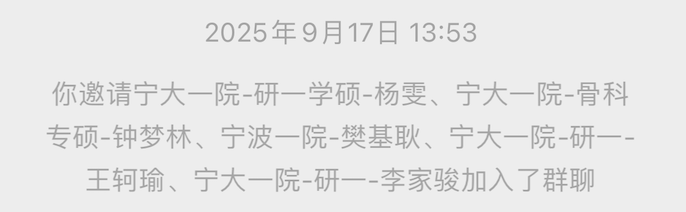
第一批实验室成员
First group of lab members
毛海蛟课题组成员杨雯、钟梦林、樊基耿、王轲瑜、李家骏加入。
Yang Wen, Zhong Menglin, Fan Jigeng, Wang Keyu, and Li Jiajun from Haijiao Mao's group joined the laboratory.
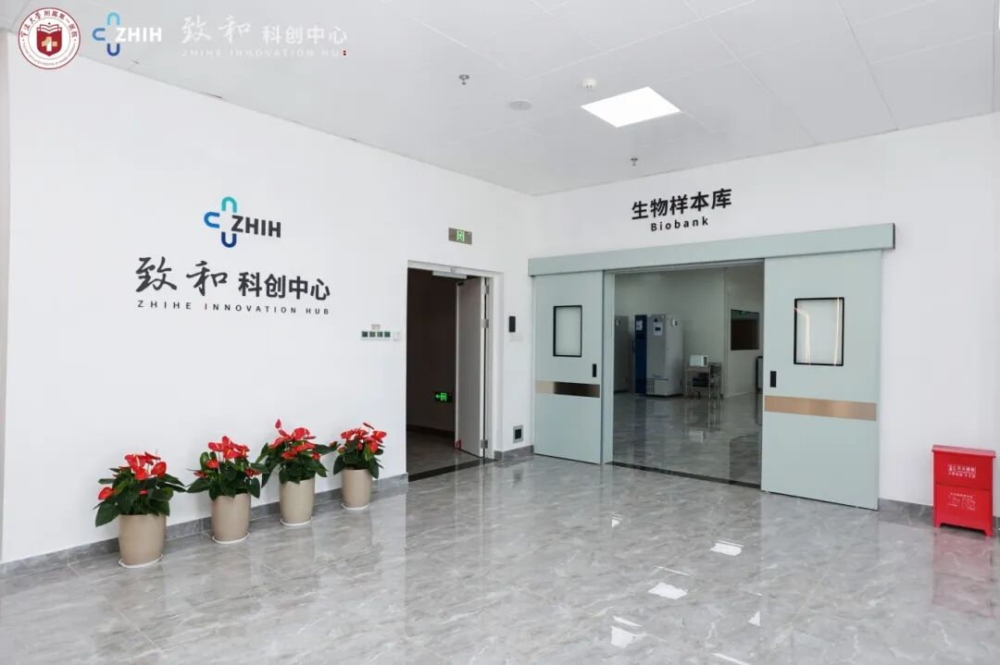
致和科创中心启用仪式
Opening ceremony of Zhihe Innovation Hub
致和科创中心启用，中心实验室平台建设进入新的阶段。
The Zhihe Innovation Hub opened, marking a new stage for the central laboratory platform.
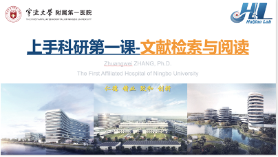
培训报告：上手科研第一课-文献检索与阅读
Training seminar: literature search and reading
围绕文献检索、论文阅读和科研入门方法开展培训报告。
A training seminar on literature search, paper reading, and getting started in research.
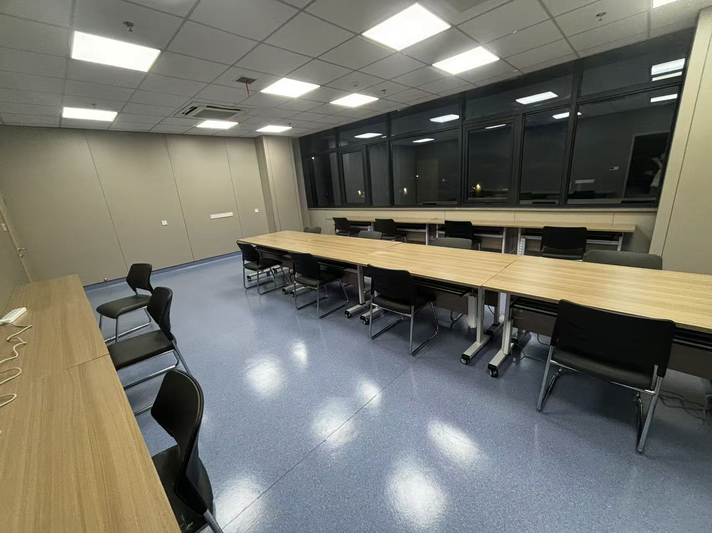
骨科研究生自习室启用
Orthopedic graduate study room opened
骨科研究生自习室启用，为学生日常学习、讨论和科研训练提供空间。
The orthopedic graduate study room opened, providing space for study, discussion, and research training.
第一次方桥组会
First Fangqiao group meeting
方桥院区课题组开展第一次组会，梳理研究任务和协作安排。
The Fangqiao group held its first group meeting to align research tasks and collaboration plans.
白圣磊加入
Bai Shenglei joined
2023级医学部本科生白圣磊加入课题组。
Bai Shenglei, a 2023 undergraduate student from the Health Science Center, joined the group.
姜烁琦研究员加入
Jiang Shuoqi joined
浙江万里学院姜烁琦研究员加入合作团队。
Researcher Jiang Shuoqi from Zhejiang Wanli University joined the collaborative team.
仪器预约平台实名制认证及准入申请
Instrument reservation platform access
推进仪器预约平台实名制认证及准入申请，规范实验平台使用流程。
Real-name verification and access applications were advanced for the instrument reservation platform.
李翔、杨成鹏、任天一加入
Li Xiang, Yang Chengpeng, and Ren Tianyi joined
骨科青年医生李翔、杨成鹏，机械与力学学院研究生任天一加入。
Young orthopedic physicians Li Xiang and Yang Chengpeng, and Ren Tianyi from the School of Mechanical Engineering and Mechanics, joined.
陶昕昊加入
Tao Xinhao joined
2025级医学部本科生陶昕昊加入课题组。
Tao Xinhao, a 2025 undergraduate student from the Health Science Center, joined the group.
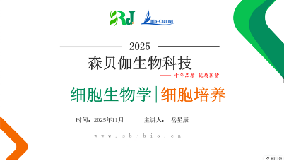
培训报告：细胞培养技术培训
Training seminar: cell culture technology
开展细胞培养技术培训，培训支持来自森贝伽市场部。
A cell culture technology training seminar was held with support from Senbeijia's marketing team.
姚思恩药师加入
Pharmacist Yao Sien joined
药学部姚思恩药师加入合作团队。
Pharmacist Yao Sien from the Department of Pharmacy joined the collaborative team.
程俊格加入
Cheng Junge joined
口腔科专硕程俊格加入课题组。
Cheng Junge, a professional master's student in stomatology, joined the group.
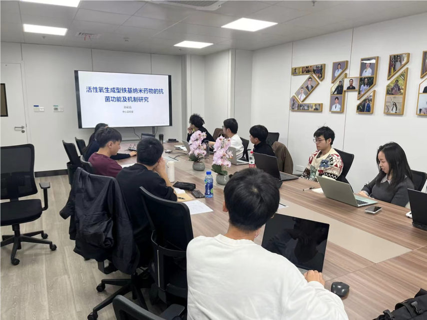
孙彩霞研究员汇报分享
Seminar by Researcher Sun Caixia
中心实验室孙彩霞研究员分享《活性氧生成型铁基纳米药物的抗菌功能及机制研究》。
Researcher Sun Caixia from the Central Laboratory presented work on ROS-generating iron-based nanomedicines for antibacterial function and mechanism studies.
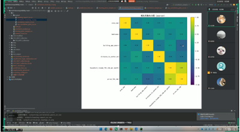
肖玉峰博士线上汇报分享
Online seminar by Dr. Xiao Yufeng
中国矿业大学肖玉峰博士线上分享《python机器学习及对话式AI帮助学术写作》。
Dr. Xiao Yufeng from China University of Mining and Technology gave an online seminar on Python machine learning and conversational AI for academic writing.
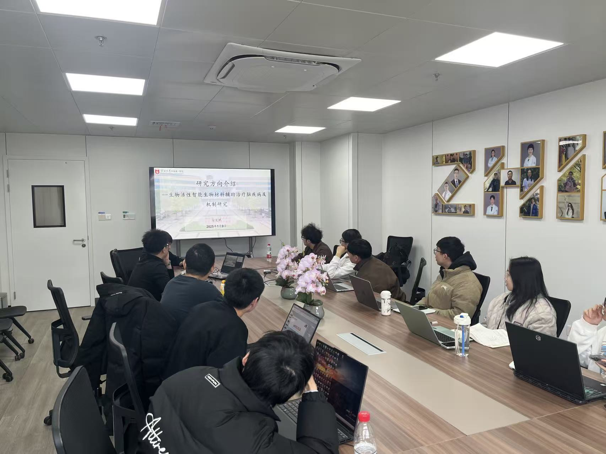
徐俊鹏研究员汇报分享
Seminar by Researcher Xu Junpeng
中心实验室徐俊鹏研究员分享《智能型生物活性水凝胶治疗脑疾病及机制研究》。
Researcher Xu Junpeng from the Central Laboratory presented work on intelligent bioactive hydrogels for treating brain diseases and related mechanisms.
修浩楠加入
Xiu Haonan joined
骨科青年医生修浩楠加入合作团队。
Young orthopedic physician Xiu Haonan joined the collaborative team.
Researcher Liu Ronghuan from the Digital Industry Research Institute of Zhejiang Wanli University presented luminescent quantum dots and biological applications; Researcher Hu Bihua from Yuyao Innovation Institute presented metal macrocycle-based composites for selective electrocatalytic CO2 reduction.
核医学科研究生加入
Nuclear medicine graduate students joined
核医学科研究生加入课题组相关方向。
Graduate students from the Department of Nuclear Medicine joined related group directions.
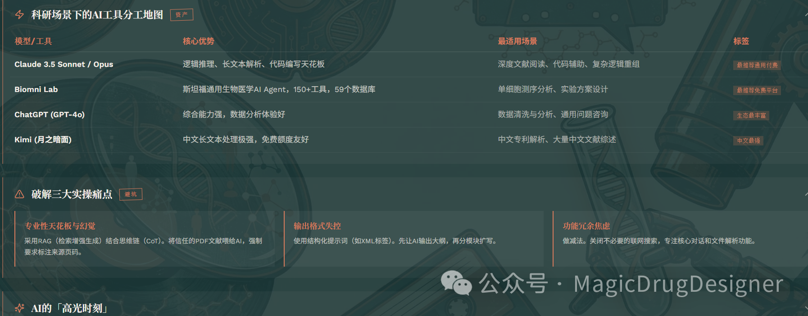
费翔老师线上分享
Online sharing by Fei Xiang
费翔老师开展AI科研工具经验线上分享。
Fei Xiang gave an online sharing session on experience with AI tools for research.
Zeng Cuiling from the Central Laboratory presented work on molecular mechanisms and targeted therapy of osteosarcoma lung metastasis; Researcher Zhang Bei presented lysosome-targeting chimeras fused with insulin-like growth factor 2.
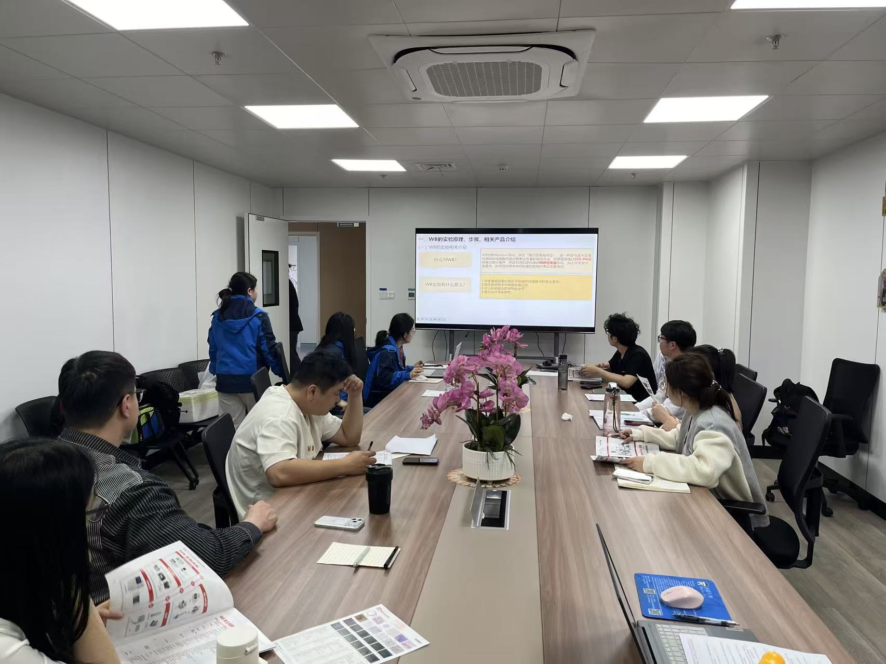
WB实验理论及实操全流程讲解
WB experiment theory and workflow training
赛维尔生物公司技术工程师开展《WB实验理论及实操全流程讲解》培训。
A technical engineer from Servicebio delivered training on Western blot experiment theory and the complete practical workflow.
专利知识讲座
Patent knowledge seminar
开展专利知识讲座，围绕科研成果保护与专利申请基础进行交流。
A patent knowledge seminar was held to discuss research outcome protection and patent application basics.
段劭加入
Duan Shao joined
核医学科段劭加入课题组相关方向。
Duan Shao from the Department of Nuclear Medicine joined related group directions.
美吉生物多组学报告
Multi-omics seminar by Majorbio
美吉生物分享《单细胞及时空多组学在骨科领域应用》。
Majorbio presented applications of single-cell and spatial-temporal multi-omics in orthopedics.
阶段性调整短期组员名单
Temporary member list adjusted
移除李翔、杨成鹏、修浩楠、游伟、李蔚然等短期不在方桥实验室开展实验的组员。
Members including Li Xiang, Yang Chengpeng, Xiu Haonan, You Wei, and Li Weiran were removed from the temporary list because they were not conducting experiments in Fangqiao Lab in the short term.
杨沅加入
Yang Yuan joined
宁波大学骨科学专业硕士研究生杨沅加入课题组。
Yuan Yang, a master's student in Orthopedics at Ningbo University, joined the group.
东方理工大学数智生物创新研究院报告
Seminar by Eastern Institute of Technology
东方理工大学数智生物创新研究院开展学术报告。
The Institute for Digital-Intelligent Bioinnovation at Eastern Institute of Technology delivered an academic seminar.
Dr. Shi Yifeng from spine surgery presented work on how PSMD14 stabilizes SLC7A11 to inhibit osteocyte ferroptosis and alleviate glucocorticoid-induced osteoporosis.
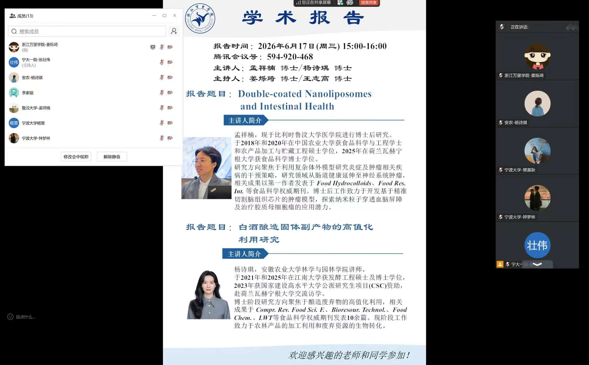
孟祥楠、杨诗琪报告与闭门会
Seminars by Meng Xiangnan and Yang Shiqi
比利时鲁汶大学医学院博士后孟祥楠分享《Double-coated Nanoliposomes and Intestinal Health》，安徽农业大学林学与园林学院讲师杨诗琪分享《白酒酿造固体副产物的高值化利用研究》，并就推进精密组织切片合作举行小型闭门会。
Postdoctoral researcher Meng Xiangnan from KU Leuven Faculty of Medicine presented Double-coated Nanoliposomes and Intestinal Health; Lecturer Yang Shiqi from Anhui Agricultural University presented valorization of solid by-products from Baijiu brewing, followed by a small closed-door meeting on precision tissue slice collaboration.
方桥实验室第一批动物实验结束
First Fangqiao Lab animal experiment completed
方桥实验室第一批动物实验结束，执行人为钟梦林。
The first Fangqiao Lab animal experiment was completed by Zhong Menglin.
霍亭洋加入
Tingyang Huo joined
温州医科大学2026级骨科学专硕霍亭洋加入课题组。
Tingyang Huo, a 2026 M.Med. candidate in Orthopedics at Wenzhou Medical University, joined the group.
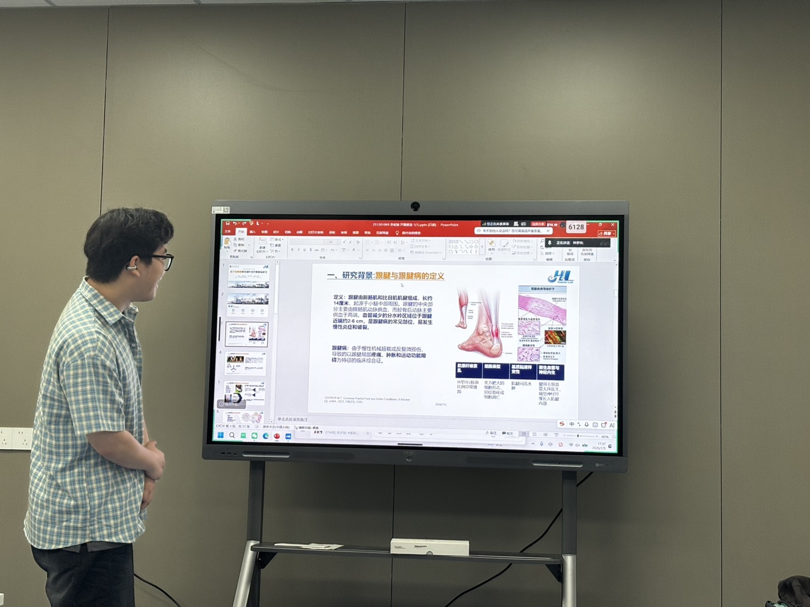
王轲瑜、李家骏课题组预开题
Pre-proposal presentations by Wang Keyu and Li Jiajun
温州医科大学研究生王轲瑜、李家骏在课题组预开题。
Wang Keyu and Li Jiajun held their group pre-proposal presentations.
陶昕昊、黄佳琦加入方桥实验室暑期实习
Xinhao Tao and Jiaqi Huang joined Fangqiao Lab for summer internship
Xinhao Tao, a 2025 Clinical Medicine student in the Top-notch Innovative Talent Program at Ningbo University, and Jiaqi Huang, a 2024 undergraduate student in Stomatology at Ningbo University, joined Fangqiao Lab for a summer internship.
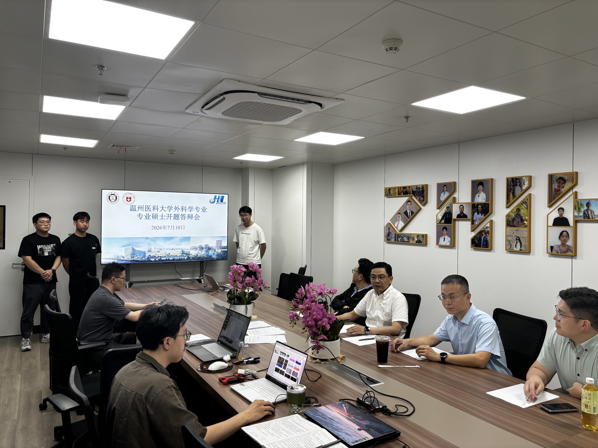
温医大外科学专硕开题答辩
Wenzhou Medical University surgery master's proposal defense
温医大外科学专硕举行开题答辩，这是方桥实验室建组的第一批开题答辩会。
Wenzhou Medical University surgery master's students held their thesis proposal defense, marking the first proposal defense meeting since Fangqiao Lab was established.
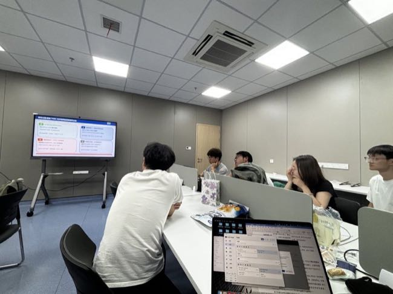
段鸿蓬老师分享三阴性乳腺癌化疗耐药研究
Seminar by Hongpeng Duan on TNBC chemoresistance
超声科段鸿蓬老师分享《三阴性乳腺癌化疗耐药微环境重塑：免疫逃逸机制解析与靶向递送体系研发》。
Hongpeng Duan from the Department of Ultrasound shared a seminar titled "Chemotherapy-resistant microenvironment remodeling in triple-negative breast cancer: mechanisms of immune escape and development of targeted delivery systems."
联系方式
Contact
合作与交流
Collaboration and Contact
欢迎开展合作讨论｜欢迎本科实习交流。
Collaboration discussions and undergraduate internship inquiries are welcome.